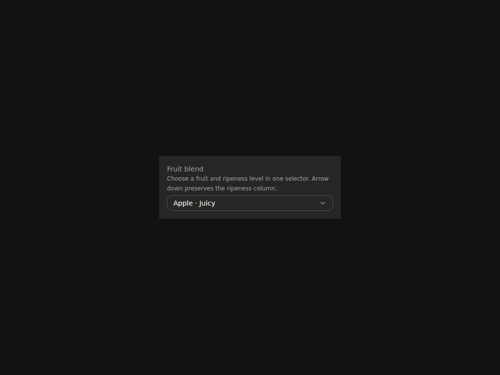

ComplexSelector · Fruit ripeness selector


f635fc3da4983572cdb51c62ccbe30f8f8327a95 on linux-arm64 · baseline e72a3662fd6dbdaf226dfba41a90a70b6827a6a4 · 2026-09-17T19:12:55.725Z
Repository maintainers only: /accept-visual 35254941128/1 <why every changed frame is correct>



Every theme override bound to a rendered target.